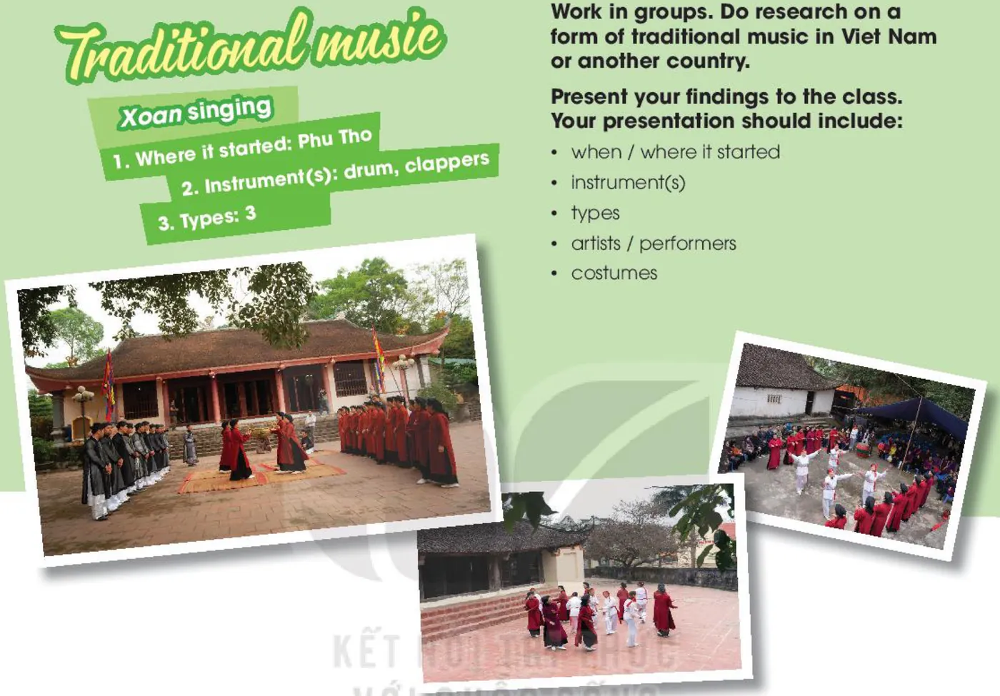

Looking back and Project
Lesson 8 — Review the unit · traditional music
3Five stops in 45 minutes
- ⚪
Warm-up
The last man standing
4 min - 🔁
Looking back
Stress · words · grammar
12 min - 🧠
Game
Brain Brawl
9 min - 🎎
Project
Traditional music
18 min - ✅
Wrap-up
Now I can …
2 min
The last man standing
Warm-up · music words
4 minutesPass the ball — say a music word!
- ⚪
Stand in a circle
Ten students, one ball.
- 🎵
Say a word
A word about music, then toss the ball.
- ❌
Out!
Repeat a word or wait more than 5 seconds.
Looking back
Pronunciation · vocabulary · grammar · page 36
12 minutesMark the stressed syllables, then read them out
- perform perFORM
- concert CONcert
- final FInal
- singer SINger
- famous FAmous
- enjoy enJOY
Complete the text with the words in the box
Our class survey revealed some surprising results about the students’ (1) ______ habits. Most of them did not hesitate to say that they love music because they find it relaxing. Their favourite music is K-pop and British or American pop music as they are big (2) ______ of Korean and American (3) ______. Fourteen out of twenty students play a musical (4) ______ and most of them practise between one and three hours a week. Going to (5) ______ is usually popular among teenagers, but only eight people said that they like going to such music events.
Box: artists · music · concerts · instrument · fans
Check your answers
(1) music
(2) fans
(3) artists
(4) instrument
(5) concerts
Match the two parts
1. She writes her own songs, c
2. He participated in many talent competitions, d
3. We can go to a live concert at City Theatre, a
4. The traffic was really bad, b
a. or we can stay at home to watch the final night of Vietnam Idol.
b. so we decided to walk to the stadium.
c. and they always have deep meanings.
d. but the judges never liked his songs.
Find the mistake and correct it
1. She asked him attend the school performance. attend → to attend
2. Don’t let her to go to the music festival! to go → go
3. Their parents will never agree buy that expensive piano. buy → to buy
4. To develop her musical talent, her father made her to sing at family gatherings. to sing → sing
Brain Brawl
Review game · steal the answer!
9 minutesProject
Traditional music · page 37
18 minutesTraditional music

Work in groups. Research a form of traditional music in Viet Nam or another country.
Your presentation should include:
- when / where it started
- instrument(s)
- types
- artists / performers
- costumes
A 2-minute group presentation
01 · Our topic is … It began in …
02 · The main instruments are …
03 · A special feature of this music is …
04 · We think it should be preserved because …
Listeners tick the checklist: greeted the audience · spoke clearly · used photos · covered all five points · concluded well.
Now I can …
- stress in two-syllable words
- music words
- compound sentences
- to V / bare V
- read about a TV show
- talk about a TV show
- listen to an interview
- write a music blog
- make suggestions
- chau van singing
Tick ✓ / ✓✓ / ✓✓✓ for each one in your book.
Homework: workbook Unit 3 review; prepare Unit 4 — For a better community · Lesson 1 (page 38).